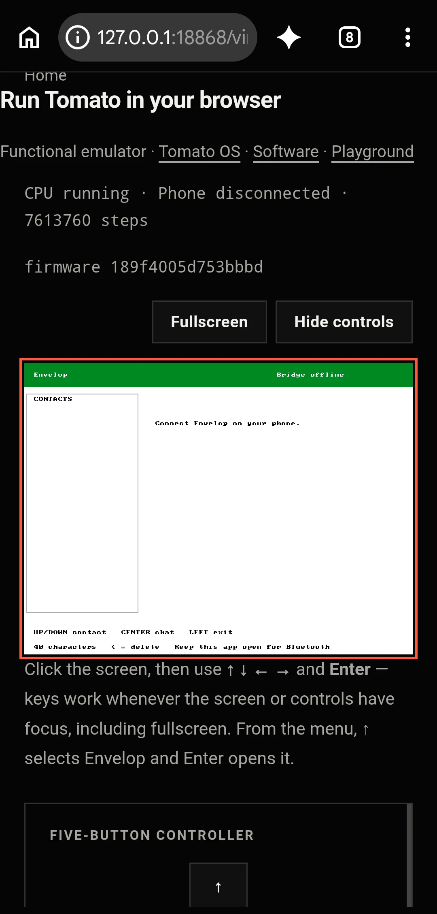

Person + Envelop
You write in the external Envelop web app. Its backend keeps the message queued; an acknowledgement means Tomato accepted it, not that a human read it.
Tomato × Envelop
Envelop is a separate messaging project. Its web and native clients, queue, and nearby bridge live outside Tomato; its small client and bounded compute executor are assembly linked into Tomato OS v3.0.
01 / The message path
You write in the external Envelop web app. Its backend keeps the message queued; an acknowledgement means Tomato accepted it, not that a human read it.
A bridge is considered online only while an authenticated lease is current and the nearby device has verified Tomato’s exact ENVELOP/1 identity. Source support alone is not an online claim.
The assembly client receives the message inside the 14-entry OS, draws the conversation, and sends a bounded reply through the Tomato CPU.
person → Envelop web app → backend queue → nearby verified bridge → Envelop in Tomato OS → Tomato CPU → labeled reply
02 / Provenance
This label is valid only after an active bridge reports a completed job on the FPGA Tomato. A timeout is an unknown outcome and never triggers an automatic virtual replay.
An explicit browser preview runs separately in the functional ISA-level emulator. It is not sent to the FPGA and is never queued for later hardware execution.
Run the emulatorLocal Icarus-driven execution is simulation, not physical execution. It verifies a development path without claiming a programmed board is currently connected.
03 / Messaging and compute

Messages may wait for hardware. They are not silently converted into simulated replies.
Message with EnvelopSupported expressions become a transparent, bounded program. Every result names its target; unsupported requests fail rather than inventing an answer.
Read the compute boundary04 / What is established
Envelop firmware, setup data, bounded executor, browser emulator, and local simulation are present in the repository.
A programmed FPGA, attached radio, active bridge, and physical reply require current live evidence.
The hosted Envelop service may differ from this working tree. The links open the public interface; availability must be observed there.
See Tomato status